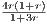
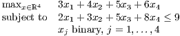
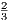

This homework will not be collected or graded.
The first three questions concern the following linear program
which has dual problem
-
1.
- Let r > 0 and μ = . Show that x(r) := (4r,1 + r,2 + 2r) solves the barrier problem
for any r > 0. (Hint: this is equivalent to showing that x(r) is on the central path. You need to find
dual feasible (y(r),s(r)) so that (x(r),y(r),s(r)) satisfy the central path conditions.) (Lecture
25)
-
2.
- Find x := limr→0x(r). Use duality to prove that this limit point x is optimal for (1). (Lecture
25)
-
3.
- Show that x is not a basic feasible solution for (1). How can we have an optimal solution to the standard form
problem (1) that is not a basic feasible solution? (Lecture 25)
-
4.
- Knapsack Gomory: Consider the knapsack problem

Valid constraints for the LP relaxation include
The point x = (,,,)T is feasible in the LP relaxation of the knapsack problem, and it also satisfies
constraints (4)–(7). Find nonnegative multipliers t1,t2,t3,t4 for the constraints (4)–(7) and add them
together to give a constraint ∑
j=14ajxj ≤ b, and then round down each aj and b to give a
valid constraint ∑
j=14⌊aj⌋xj ≤⌊b⌋ for the knapsack problem which is violated by x. (Hint: try
to choose t1,t2,t3,t4 so that each component aj is integral, while b is not integral.) (Lecture
23)
-
5.
- (Lecture 26) Note that all arcs point from a lower-numbered node to a higher-numbered node in the
network below, which can be exploited to design dynamic programming algorithms to answer the questions
below.
-
(a)
- Use dynamic programming to find all the shortest paths from node 1 to node 12 in the graph.
-
(b)
- Use dynamic programming to find all the longest paths from node 1 to node 12 in the graph.
In addition, read Sections 1.8, 21.1 and 7.8 from the text.
Solving the homework problems (and other problems from the text) will improve your understanding of the
material.
Working out the problems yourself will greatly improve your understanding of the material and help you on the
exams. You can ask questions on piazza, in addition to using office hours or email.
Exam 3 will be on Friday December 9 and will cover integer programming, interior point methods, and dynamic
programming. There is no final exam.